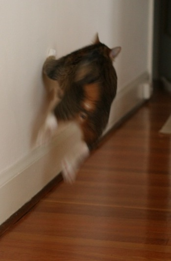
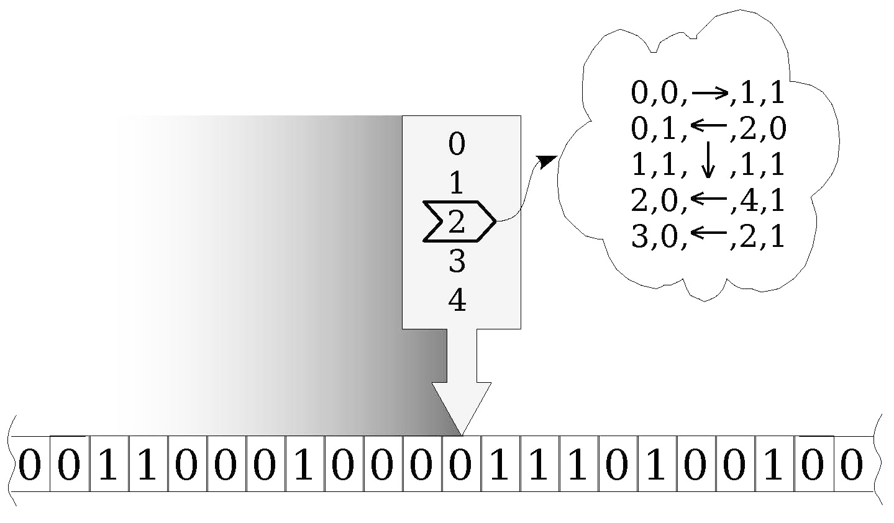
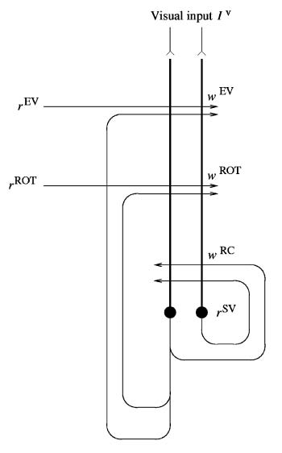
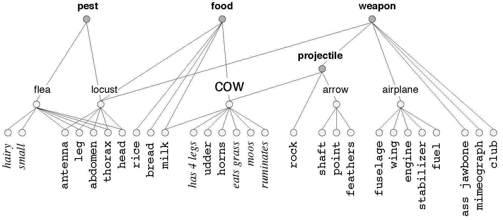
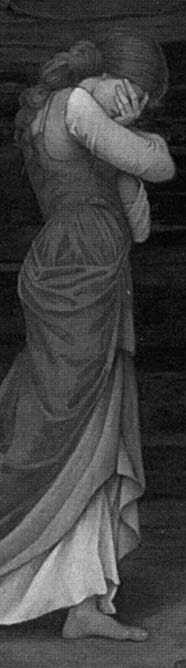
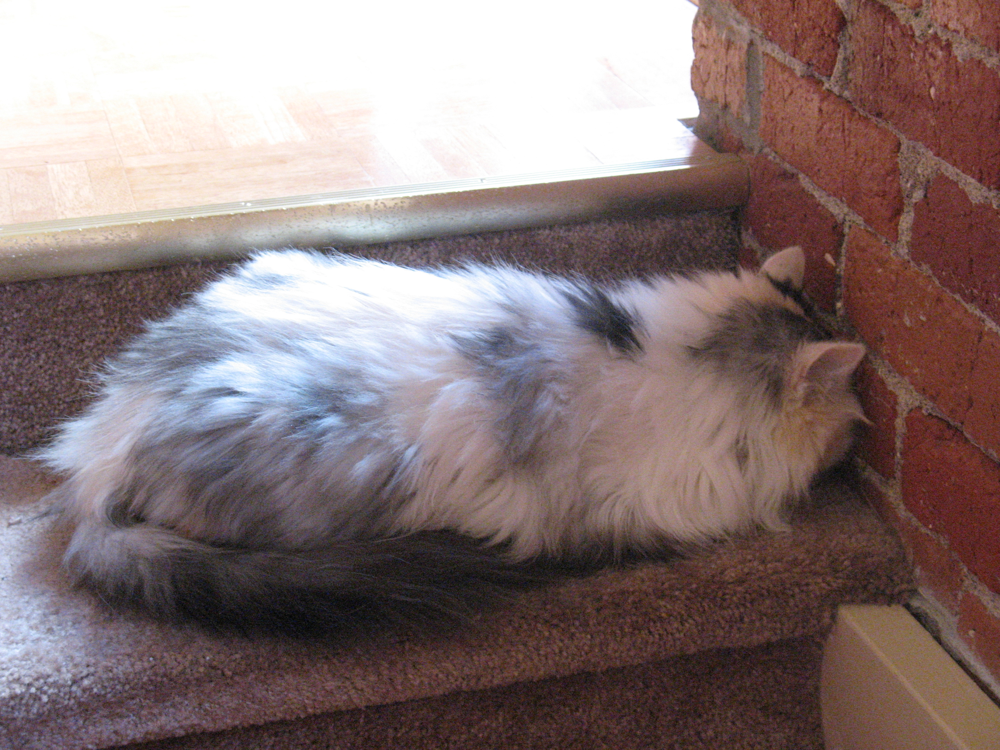
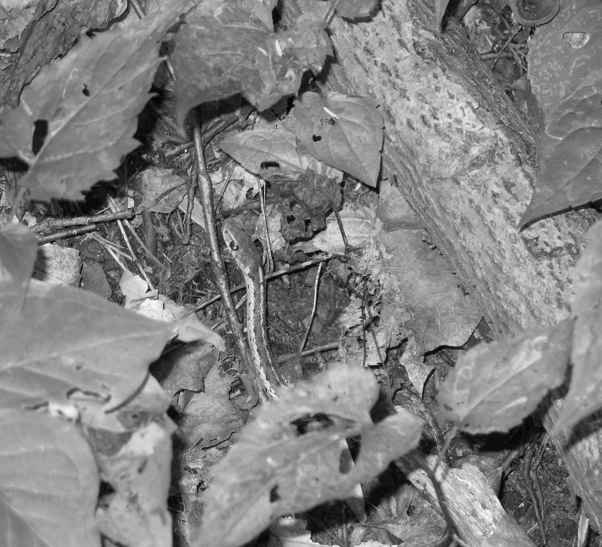
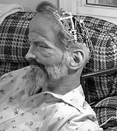

October 20, 2008: bad news! The second printing is not error-free: OUP managed to screw it up again by leaving out some more stuff that had been present in the galley proofs. These additional errors are flagged in red in the table below.
NOTE: if you find an error that is not listed here, please email me.
| page | place/item | correction | notes |
|---|---|---|---|
| p.25 | Margin image | There is a missing illustration:  |
This illustration was present in the galley proofs, which means that the mess-up is on the part of Oxford University Press (not that it makes me any happier). |
| p.27 | Figure 2.6 | The figure has been mutilated; the correct figure appears here:  |
This figure was present in its correct form in the galley proofs, which means that the mess-up is on the part of Oxford University Press. |
| p.63 | "A MIND is a terrible thing to explain. Francis Crick, wrote in 1994 [...]" | The comma after "Crick" is spurious. | My fault. |
| p.139 | The bottommost paragraph has a few words missing at the beginning. |
Here's the correct full text:
|
My fault. |
| p.165 | The middle panel in Fig. 6.4 is missing. | Here is the missing part of the illustration:  |
This illustration too was present in the galley proofs. NOTE: this error is present also in the advance copy of the second printing, in which OUP was supposed to rectify the compositor's fault. |
| p.183 | In Figure 6.13, the left panel is clipped and two labeled points in the diagram are missing from it. | Here is the complete diagram:  |
This illustration too was present in the galley proofs. NOTE: this error is present also in the advance copy of the second printing, in which OUP was supposed to rectify the compositor's fault. |
| p.205 | Last line of the first paragraph reads: "putting oneself in my place". | This should read: "putting yourself in my place". |
My fault. |
| p.227 | Margin image | There is a missing illustration: |
This illustration too was present in the galley proofs. |
| p.228 | Margin image | There is a missing illustration:  |
This illustration too was present in the galleys. |
| p.278 | There is a passage in the margin note that reads "(thus proving that he was smarter than Ginger from Figure 7.19 on page 297)." | This is a leftover from an early draft: a reference to a cartoon that ended up not being included in the final version of the book. The entire parenthetical remark should be ignored. | My fault. |
| p.306 | Margin image | There is a missing illustration:  |
This illustration too was present in the galleys. |
| p.321 | The margin note under the heading "1957:" reads "The first working program for chess implemented on an IBM 704 computer, which runs at 42 Khz, and has a 7,000-word memory)". | Instead of "Khz", it should read "kHz"; also, the parenthesis after "memory" is spurious. | My fault. |
| p.337 | The 8th line from the top, "Figure 8.10 (top)" ... | ... should be "Figure 8.10 (bottom)". | Typo. |
| p.427 | Margin image | There is a missing illustration:  |
This illustration too was present in the galleys. |
| p.474 | Margin image | There is a missing illustration:  |
This illustration too was present in the galleys. |
| p.596 | Mistyped index entry | The last item under "creativity" should read
|
Typo |
| p.601 | Missing index entry | The missing entry is:
|
Return to the home page.
Shimon Edelman <se37 at cornell.edu> Last modified on Wed Mar 2 09:14:07 2011